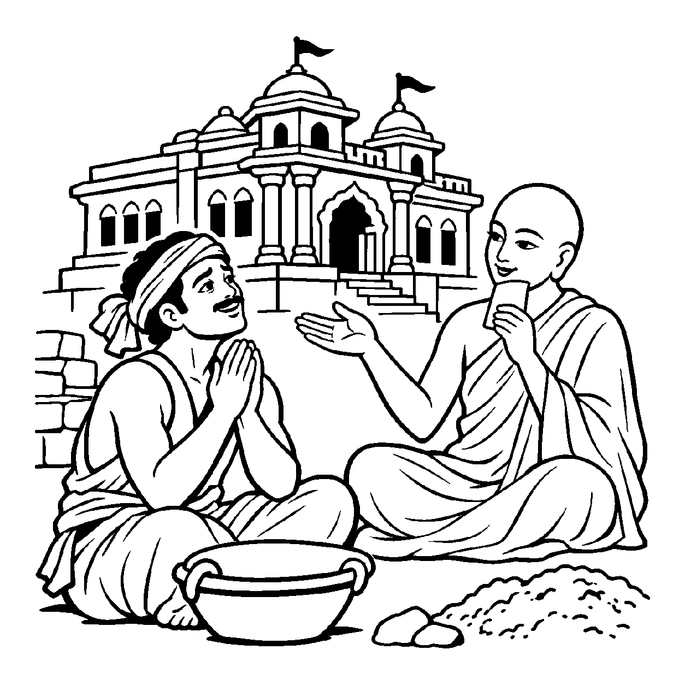

પ્રભાત થતાં જ પૂર્વ ગગનમાં સૂર્યનારાયણ ઉદય પામે છે. તેમના પ્રકાશમાં ખેડૂત હળ જોડે છે, વેપારી દુકાન ખોલે છે, પંખીઓ માળા છોડી આકાશમાં ઊડે છે અને ચોર અંધકાર શોધવા ભાગે છે. પરંતુ આમાંથી કોઈ પણ ક્રિયા સૂર્ય સ્વયં કરતો નથી! સૂર્ય કોઈને ખેતી કરવાનું કહેતો નથી કે કોઈને ચોરી કરવાનું શીખવતો નથી; તે તો કેવળ પોતાના સ્વભાવથી અલિપ્ત, નિર્લેપ અને અકર્તા રહીને કેવળ પ્રકાશ જ પાથરે છે! તેવી જ રીતે એક સ્વચ્છ આયના સામે કોઈ નાચે, કૂદે કે રડે, તો દર્પણ તે ક્રિયાઓ કરતું નથી પણ કેવળ ઝીલે છે. તેવી જ રીતે પરમાર્થ દ્રષ્ટિએ આત્મા પુદ્ગલકર્મો, શરીરની ક્રિયાઓ કે સંસારના બનાવોનો ક્યારેય સાચો કર્તા બનતો નથી. તે તો કેવળ જ્ઞાતા-દ્રષ્ટા અને અકર્તા સ્વરૂપ છે. આત્માના આવા પરમ અકર્તૃત્વ સ્વભાવને દર્શાવતો દ્રષ્ટિકોણ એટલે 'અકર્તૃનય'.
જીવ સંસારમાં દુઃખી એટલા માટે છે કારણ કે તે માને છે: "હું આ ઘર ચલાવું છું, હું બાળકોનો પાલક છું, હું શરીરને સાચવું છું!" આ મિથ્યા કર્તૃત્વનો બોજ જીવને કચડી નાખે છે. અકર્તૃનય સાધકને આ બોજમાંથી એક જ ક્ષણમાં મુક્ત કરે છે. પ્રત્યેક દ્રવ્ય પોતાના પરિણામોનું પોતે જ કર્તા છે, આત્મા પરનો કર્તા કદી બની શકતો નથી. આ સત્ય સમજતાં જ અહંકાર ઓગળી જાય છે.
આ નય સાધકને કર્તૃત્વના કલેશમાંથી છોડાવી શાશ્વત જ્ઞાતાપણામાં સ્થિર કરી શાંતિ બક્ષે છે.
સૂર્ય પ્રકાશે વિશ્વમાં, ક્રિયા કરે નહિ ક્યાંય;
અકર્તૃનયથી જાણીએ, આતમ જ્ઞાતા માંહ્ય.
પરદ્રવ્યોનો કર્તા નહિ, કેવળ સાક્ષી રૂપ;
કર્તાપણું ઓગળ્યું હવે, પ્રગટે શાંતિ અનૂપ.
સાધકને કર્તૃત્વના કલેશમાંથી છોડાવી શાશ્વત જ્ઞાતાપણામાં સ્થિર કરી શાંતિ બક્ષે છે.

ધર્મનગરના એક મોટા મહેલના નિર્માણમાં દેવરાજ નામનો એક યુવાન મજૂર વર્ષોથી માથા પર પથ્થર અને માટીના તગારા ઊંચકીને દોડતો હતો. સાંજે તે થાકીને લોથપોથ થઈ જતો. એક દિવસ મહેલ તૈયાર થઈ ગયો. રાજાએ સેનાપતિ અને સ્થપતિને મોટા ઇનામો આપ્યા. દેવરાજ એક ખૂણામાં બેસીને રડવા લાગ્યો: "આ મહેલની એક-એક ઈંટ મેં મારા માથા પર ઊંચકી છે, આ આખો મહેલ મેં બનાવ્યો છે! છતાં મને કેવળ થોડા સિક્કા મળ્યા! હું આટલો મોટો કર્તા હોવા છતાં આટલો દુઃખી કેમ છું?" દેવરાજના અંતરમાં પોતાના કર્તૃત્વના અભિમાન અને અપેક્ષાની ભારે વેદના ભરેલી હતી.
તે મહેલના ઉદ્ઘાટન પ્રસંગે પધારેલા એક પરમ વીતરાગી મુનિરાજે દેવરાજને રડતો જોયો. મુનિરાજ તેની પાસે આવ્યા અને પ્રેમથી પૂછ્યું: "દેવરાજ! તું આટલો ઉદાસ કેમ છે?" દેવરાજે કહ્યું: "મહારાજ! આ મહેલ મેં બનાવ્યો છે છતાં કોઈ મારો આભાર માનતું નથી!" મુનિરાજે સ્મિત સાથે કહ્યું: "દેવરાજ! અકર્તૃનયનું સત્ય સમજો! પથ્થર અને માટી પુદ્ગલ પરમાણુઓ હતા, તે પોતાની મેળે પોતાના સ્વભાવમાં રહ્યા છે. તારા આત્માએ ન તો કોઈ ઈંટ ઘડી છે કે ન તો કોઈ ચૂનો બનાવ્યો છે! તું કેવળ દેહની ક્રિયાઓનો જ્ઞાતા હતો. તું પુદ્ગલનો કર્તા બનીને બેસી ગયો એટલે તારા માથે આટલું દુઃખ આવ્યું! જે દિવસે તું આ કર્તૃત્વનો ભાર માથા પરથી ઉતારી દઈશ અને જાણીશ કે તું કેવળ અરૂપી આત્મા છે, તે દિવસે તું સમ્રાટ કરતાં પણ વધુ સુખી થઈ જઈશ!" આ સાંભળતાં જ દેવરાજના મનમાંથી કર્તૃત્વનો પહાડ ઊતરી ગયો. તેણે અહંકાર ત્યજી દીધો અને તેનું ચિત્ત પરમ હળવાશ સાથે પરમ વિશ્રામમાં લીન થઈ ગયું.
જો જીવ કેવળ અકર્તૃનયને જ એકાંત સત્ય માની પોતાના રાગ-દ્વેષના પરિણામોમાંથી પણ છટકી જાય અને પાપ આચરતો રહે, તો તે ઘોર અધર્મમાં પતિત થાય છે. એક જ પાસાને પકડી રાખવાથી વસ્તુની સમગ્ર અનેકાંતમય સત્તા વિખંડિત થાય છે અને સાધક પોતાના જ એકાંગી આગ્રહના બંધનમાં ફસાઈને સાચી શાંતિ ગુમાવી બેસે છે.
આ નય પરદ્રવ્યોના મિથ્યા કર્તૃત્વમાંથી મુક્ત કરી જીવને સાચા જ્ઞાતાભાવમાં પ્રતિષ્ઠિત કરે છે, જેથી ચેતના પોતાના આત્મસ્વરૂપમાં સ્થિર થાય છે.